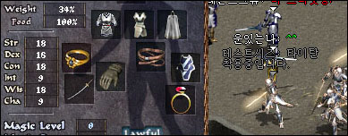

2003年1月10日 泰坦皮帶 來源：Lineage Playforum
英文翻譯：Lineage Compendium  泰坦皮帶的重量是50，騎士專用，黃昏山脈的巨人會掉落。不過，此皮帶有一個副作用，就是穿著者的速度會減慢。此副作用不能用加速藥水抵消，在正常狀態(100%速度)穿著了泰坦皮帶後只有75%速度。在加後速度會有94%，而再使用勇水則有117%。因此，使用了勇綠及泰坦皮帶的騎士仍比只使用綠水的騎士(125%)速度慢。 至於此皮帶可以增加多少載重呢？18力18體的騎士在穿著後載重由41%降至34%，大約是200的重量。 |